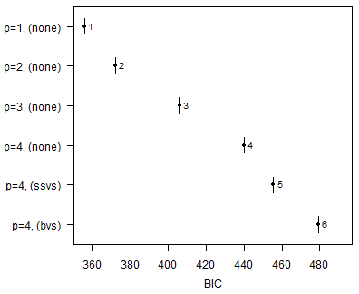
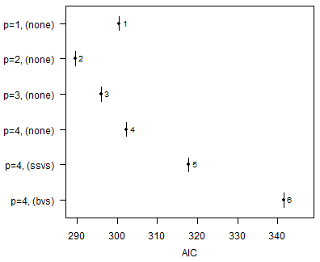
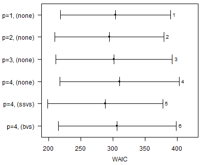
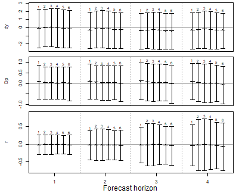
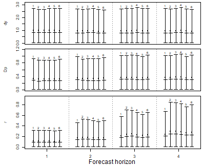
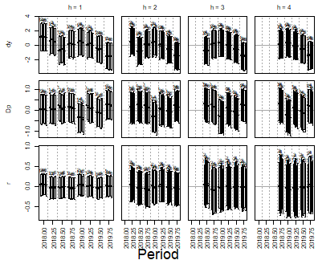
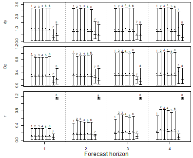

Introduction
In a horse race a set of competing models is estimated on the same data and ranked by how well they forecast. The comparison is more convincing, if it rests on forecasts that could actually have been made at the time. Therefore, each model is estimated repeatedly over an expanding window: the first window ends some periods before the end of the sample, each further window adds one period, and every estimate forecasts the periods, which follow the end of its window. The forecast errors of all windows are then summarised by out-of-sample statistics, which are complemented by the in-sample criteria of the vignette on model comparison.
This vignette lets three specifications of a VAR model compete: models with a weakly informative prior and lag orders from one to four, a model with stochastic search variable selection (SSVS) and a model with Bayesian variable selection (BVS). The last section shows how forecasts from other sources can join the race.
Workflow
The models compete on the growth rate of Austrian real GDP
(dy), inflation (Dp) and the short-term
interest rate (r) from data set at_macrodata,
all in percent per quarter and up to 2019Q4, which leaves out the
quarters in which the pandemic moved output growth by ten percent. Each
model is estimated over an expanding window, whose first estimation
sample ends in 2017Q4.
data("at_macrodata")
at <- at_macrodata[["domestic"]]
data <- ts.intersect(dy = diff(at[, "y"]), Dp = at[, "Dp"], r = at[, "r"]) * 100
data <- window(data, end = c(2019, 4))
expanding_window_start <- 2018Producing candidate models
# Shared specifications
iterations <- 2000
burnin <- 1000
# Reset random number generator for reproducibility
set.seed(1234567)First, create a series of traditional VAR models:
var_default <- create_bvarmodel(data,
p = 1:4,
deterministic = "const",
iterations = iterations,
burnin = burnin)
var_default <- use_expanding_window(var_default, start = expanding_window_start)
var_default <- add_priors(var_default,
coef = list(v_i = 1 / 10, v_i_det = 1 / 100),
sigma = list(df = 3, scale = 1))
var_default <- add_initial_values(var_default)Second, create a series of VAR models with stochastic search variable selection (SSVS):
var_ssvs <- create_bvarmodel(data,
p = 4,
varsel = "ssvs",
deterministic = "const",
iterations = iterations,
burnin = burnin)
var_ssvs <- use_expanding_window(var_ssvs, start = expanding_window_start)
var_ssvs <- add_priors(var_ssvs,
coef = list(v_i = 1 / 10, v_i_det = 1 / 100),
sigma = list(df = 3, scale = 1),
varsel = list(inprior = 0.5, tau = c(0.05, 10), exclude_det = TRUE))
var_ssvs <- add_initial_values(var_ssvs)Third, create a series of VAR models with Bayesian variable selection à la Korobilis (2013):
var_bvs <- create_bvarmodel(data,
p = 4,
varsel = "bvs",
deterministic = "const",
iterations = iterations,
burnin = burnin)
var_bvs <- use_expanding_window(var_bvs, start = expanding_window_start)
var_bvs <- add_priors(var_bvs,
coef = list(v_i = 1 / 10, v_i_det = 1 / 100),
sigma = list(df = 3, scale = 1),
varsel = list(inprior = 0.5, exclude_det = TRUE))
var_bvs <- add_initial_values(var_bvs)Use combine_models to make one object:
models <- combine_models(var_default,
var_ssvs,
var_bvs)Draw posteriors
models <- add_posterior_coefficients(models)Forecasting
Forecasts are obtained in two steps. First, function
add_forecast_input generates the data of the forecast
periods, where deterministic terms can be provided in the argument
deterministic and unmodelled variables in the argument
exogen. If they are not provided, the function tries to
obtain them from the model and gives a message, if it does not succeed.
Second, function add_posterior_forecasts then simulates the
forecasts.
models <- add_forecast_input(models, n_ahead = 4)
models <- add_posterior_forecasts(models)Calculate forecast errors on which out-of-sample selection criteria will be based:
models <- add_forecast_errors(models, test_sample = data)Evaluation
Use function add_posterior_loglik to add
log-likelihoods, on which in-sample selection criteria will be
based:
models <- add_posterior_loglik(models)Calculate in-sample and out-of-sample selection criteria:
sc <- selection_criteria(models)Compare the selection criteria. For out-of-sample criteria, the first model is used as a reference for comparison:
print(sc, relative = 1)
#>
#> ------------------------------------------
#> In-sample
#> ------------------------------------------
#>
#> Log-likelihood
#>
#> Mean Median Quantile (2.5%) Quantile (97.5%)
#> Model 1 -141.2 -140.8 -151.3 -133.3
#> Model 2 -131.4 -131.0 -142.1 -121.9
#> Model 3 -129.9 -129.5 -141.7 -119.5
#> Model 4 -128.6 -128.5 -142.0 -116.7
#> Model 5 -128.3 -128.1 -140.3 -118.2
#> Model 6 -138.7 -138.2 -152.5 -127.6
#>
#>
#> Akaike Information Criterion (AIC)
#>
#> Mean Median Quantile (2.5%) Quantile (97.5%)
#> Model 1 300.5 300.5
#> Model 2 289.5 289.5
#> Model 3 295.9 295.9
#> Model 4 302.3 302.3
#> Model 5 317.8 317.8
#> Model 6 341.6 341.6
#>
#>
#> Bayesian Information Criterion (BIC)
#>
#> Mean Median Quantile (2.5%) Quantile (97.5%)
#> Model 1 355.6 355.6
#> Model 2 372.1 372.1
#> Model 3 406.2 406.2
#> Model 4 440.1 440.1
#> Model 5 455.6 455.6
#> Model 6 479.4 479.4
#>
#>
#> Hannan-Quinn Criterion (HQ)
#>
#> Mean Median Quantile (2.5%) Quantile (97.5%)
#> Model 1 322.9 322.9
#> Model 2 323.0 323.0
#> Model 3 340.7 340.7
#> Model 4 358.3 358.3
#> Model 5 373.8 373.8
#> Model 6 397.5 397.5
#>
#>
#> Widely Applicable Information Criterion (WAIC)
#>
#> Mean Median Quantile (2.5%) Quantile (97.5%)
#> Model 1 303.7 303.7 218.1 389.3
#> Model 2 294.6 294.6 210.0 379.2
#> Model 3 301.5 301.5 211.1 392.0
#> Model 4 310.2 310.2 217.5 402.9
#> Model 5 287.9 287.9 198.2 377.6
#> Model 6 306.6 306.6 214.8 398.4
#>
#> Periods with a pointwise log-likelihood variance above 0.4, which makes the correction of WAIC unreliable, in models 1 (11), 2 (17), 3 (23), 4 (28), 5 (16), 6 (15).
#>
#>
#> Leave-One-Out Information Criterion (LOOIC)
#>
#> Mean Median Quantile (2.5%) Quantile (97.5%)
#> Model 1 303.9 303.9 218.3 389.6
#> Model 2 295.1 295.1 210.4 379.9
#> Model 3 303.1 303.1 212.1 394.1
#> Model 4 312.1 312.1 218.8 405.4
#> Model 5 288.2 288.2 198.6 377.9
#> Model 6 307.6 307.6 215.1 400.2
#>
#> Influential periods, whose importance sampling is unreliable, in models 3 (1), 4 (2), 6 (2), counted as a Pareto k above 0.7.
#>
#>
#> ------------------------------------------
#> Out-of-sample
#> ------------------------------------------
#>
#> Mean absolute forecast errors (MAFE)
#>
#> Variable h Model 1 Model 2 Model 3 Model 4 Model 5 Model 6
#> dy 1 1 1.0012 1.0006 1.0179 1.0019 0.9882
#> Dp 1 1 0.9399 0.9442 0.9488 0.9487 0.9738
#> r 1 1 0.9879 0.9713 0.9735 0.9491 0.9764
#> dy 2 1 0.9952 1.0086 1.0215 0.9825 0.9717
#> Dp 2 1 0.9405 0.9405 0.9352 0.9315 0.9790
#> r 2 1 1.1084 1.0904 1.0511 1.0169 1.0489
#> dy 3 1 1.0116 1.0179 1.0363 1.0113 1.0190
#> Dp 3 1 1.0005 1.0007 0.9875 0.9662 0.9978
#> r 3 1 1.1672 1.1822 1.1164 1.0585 1.1031
#> dy 4 1 1.0077 1.0215 1.0260 0.9947 0.9767
#> Dp 4 1 1.0190 1.0442 1.0324 0.9713 1.0178
#> r 4 1 1.2126 1.2328 1.1976 1.1134 1.1475
#>
#>
#> Root mean squared forecast errors (RMSFE)
#>
#> Variable h Model 1 Model 2 Model 3 Model 4 Model 5 Model 6
#> dy 1 1 0.9955 0.9968 1.0150 0.9993 0.9868
#> Dp 1 1 0.9419 0.9486 0.9496 0.9505 0.9797
#> r 1 1 0.9868 0.9748 0.9745 0.9531 0.9819
#> dy 2 1 0.9942 1.0057 1.0193 0.9852 0.9759
#> Dp 2 1 0.9406 0.9438 0.9390 0.9339 0.9833
#> r 2 1 1.1125 1.0953 1.0558 1.0183 1.0551
#> dy 3 1 1.0114 1.0190 1.0392 1.0118 1.0162
#> Dp 3 1 0.9987 1.0013 0.9871 0.9663 0.9982
#> r 3 1 1.1809 1.1864 1.1201 1.0628 1.1126
#> dy 4 1 1.0054 1.0177 1.0254 0.9931 0.9774
#> Dp 4 1 1.0152 1.0428 1.0340 0.9720 1.0225
#> r 4 1 1.2232 1.2363 1.2059 1.1184 1.1622In-sample plots
plot(sc, criterion = "BIC")
plot(sc, criterion = "AIC")
AIC and BIC penalise a model by the number of parameters it nominally has, which is the same number for the three models with four lags: variable selection does not remove a coefficient from the model, it shrinks it towards zero, and how much of the nominal freedom that leaves is decided by the data rather than by the count. WAIC penalises by the flexibility the fit actually used and is the criterion to compare such models with.
plot(sc, criterion = "WAIC")
Out-of-sample plots
plot(sc, criterion = "FE")
plot(sc, criterion = "AFE")
plot_forecast_errors_by_period(models, criterion = "FE")
Adding forecasts from other sources
A horse race becomes more informative, if the models do not only
compete with each other, but also with the forecasts that institutions
actually published. Function create_external_forecast turns
such forecasts into an object, which can be added to the list of models
and which is then treated as one more competitor by all the functions
above.
Published forecasts can be taken from any source, as long as they are provided in long format with one point forecast per row. To keep this vignette self-contained, the following example uses two made-up forecasters instead. Each of them publishes a forecast for the current and the following three quarters at the beginning of every quarter from 2018Q1 to 2019Q4. Forecaster A is well informed: its forecasts are the realised values plus noise, which increases with the forecast horizon. Forecaster B always forecasts the mean of the series up to 2017Q4. Neither of them says anything about the performance of real forecasters.
fcst <- expand.grid(origin = seq(2018, 2019.75, by = 0.25),
h = 1:4,
variable = colnames(data),
forecaster = c("Forecaster A", "Forecaster B"),
stringsAsFactors = FALSE)
# Period, for which a forecast is made, as in time(data)
fcst[["period"]] <- fcst[["origin"]] + (fcst[["h"]] - 1) / 4
# Only periods with realised values can be evaluated
fcst <- fcst[fcst[["period"]] <= 2019.75, ]
# Realised values of each forecasted period
realised <- data[cbind(match(round(fcst[["period"]] * 4), round(time(data) * 4)),
match(fcst[["variable"]], colnames(data)))]
# Sample before the first publication
before <- window(data, end = c(2017, 4))
noise <- rnorm(nrow(fcst),
sd = 0.5 * sqrt(fcst[["h"]]) *
apply(diff(before), 2, sd)[fcst[["variable"]]])
fcst[["value"]] <- ifelse(fcst[["forecaster"]] == "Forecaster A",
realised + noise,
colMeans(before)[fcst[["variable"]]])
head(fcst)
#> origin h variable forecaster period value
#> 1 2018.00 1 dy Forecaster A 2018.00 1.6488127
#> 2 2018.25 1 dy Forecaster A 2018.25 1.9068402
#> 3 2018.50 1 dy Forecaster A 2018.50 -1.0217169
#> 4 2018.75 1 dy Forecaster A 2018.75 -0.3977054
#> 5 2019.00 1 dy Forecaster A 2019.00 0.7443746
#> 6 2019.25 1 dy Forecaster A 2019.25 0.3509513The columns of the data set do not have to follow a particular naming
convention. They are specified in the arguments period,
origin, variable and value, where
origin contains the date, at which a forecast was
published, and periods follow the convention of time,
i.e. 2018.25 for the second quarter of 2018. The names in column
variable must be those of the endogenous variables of the
models. Argument by produces one object per forecaster:
external <- create_external_forecast(fcst, models,
period = "period",
origin = "origin",
variable = "variable",
value = "value",
by = "forecaster",
data_lag = 1)A forecaster, which publishes a forecast in the first quarter of
2018, does not know the value of that quarter yet and, since data are
published with a delay, not even that of 2017Q4 in most cases. Argument
data_lag states this publication lag of the data in
periods, so that each forecast is matched to the estimation window,
which ends in 2017Q4. The forecast for 2018Q1 is then the one-step ahead
forecast of both the forecaster and the models. If a forecaster
published multiple forecasts between two data releases, only one of them
is used, the latest by default, so that no forecaster enters the
comparison twice.
From here on the external forecasts follow the workflow of the models. The functions, which add priors, initial values or posterior draws, are without effect for them:
all_models <- combine_models(models, external)
all_models <- add_forecast_errors(all_models, test_sample = data)
sc_all <- selection_criteria(all_models)
print(sc_all, relative = 1)
#>
#> ------------------------------------------
#> In-sample
#> ------------------------------------------
#>
#> Log-likelihood
#>
#> Mean Median Quantile (2.5%) Quantile (97.5%)
#> Model 1 -141.2 -140.8 -151.3 -133.3
#> Model 2 -131.4 -131.0 -142.1 -121.9
#> Model 3 -129.9 -129.5 -141.7 -119.5
#> Model 4 -128.6 -128.5 -142.0 -116.7
#> Model 5 -128.3 -128.1 -140.3 -118.2
#> Model 6 -138.7 -138.2 -152.5 -127.6
#> Model 7
#> Model 8
#>
#>
#> Akaike Information Criterion (AIC)
#>
#> Mean Median Quantile (2.5%) Quantile (97.5%)
#> Model 1 300.5 300.5
#> Model 2 289.5 289.5
#> Model 3 295.9 295.9
#> Model 4 302.3 302.3
#> Model 5 317.8 317.8
#> Model 6 341.6 341.6
#> Model 7
#> Model 8
#>
#>
#> Bayesian Information Criterion (BIC)
#>
#> Mean Median Quantile (2.5%) Quantile (97.5%)
#> Model 1 355.6 355.6
#> Model 2 372.1 372.1
#> Model 3 406.2 406.2
#> Model 4 440.1 440.1
#> Model 5 455.6 455.6
#> Model 6 479.4 479.4
#> Model 7
#> Model 8
#>
#>
#> Hannan-Quinn Criterion (HQ)
#>
#> Mean Median Quantile (2.5%) Quantile (97.5%)
#> Model 1 322.9 322.9
#> Model 2 323.0 323.0
#> Model 3 340.7 340.7
#> Model 4 358.3 358.3
#> Model 5 373.8 373.8
#> Model 6 397.5 397.5
#> Model 7
#> Model 8
#>
#>
#> Widely Applicable Information Criterion (WAIC)
#>
#> Mean Median Quantile (2.5%) Quantile (97.5%)
#> Model 1 303.7 303.7 218.1 389.3
#> Model 2 294.6 294.6 210.0 379.2
#> Model 3 301.5 301.5 211.1 392.0
#> Model 4 310.2 310.2 217.5 402.9
#> Model 5 287.9 287.9 198.2 377.6
#> Model 6 306.6 306.6 214.8 398.4
#> Model 7
#> Model 8
#>
#> Periods with a pointwise log-likelihood variance above 0.4, which makes the correction of WAIC unreliable, in models 1 (11), 2 (17), 3 (23), 4 (28), 5 (16), 6 (15).
#>
#>
#> Leave-One-Out Information Criterion (LOOIC)
#>
#> Mean Median Quantile (2.5%) Quantile (97.5%)
#> Model 1 303.9 303.9 218.3 389.6
#> Model 2 295.1 295.1 210.4 379.9
#> Model 3 303.1 303.1 212.1 394.1
#> Model 4 312.1 312.1 218.8 405.4
#> Model 5 288.2 288.2 198.6 377.9
#> Model 6 307.6 307.6 215.1 400.2
#> Model 7
#> Model 8
#>
#> Influential periods, whose importance sampling is unreliable, in models 3 (1), 4 (2), 6 (2), counted as a Pareto k above 0.7.
#>
#>
#> ------------------------------------------
#> Out-of-sample
#> ------------------------------------------
#>
#> Mean absolute forecast errors (MAFE)
#>
#> Variable h Model 1 Model 2 Model 3 Model 4 Model 5 Model 6 Model 7 Model 8
#> dy 1 1 1.0012 1.0006 1.0179 1.0019 0.9882 0.4509 0.6050
#> Dp 1 1 0.9399 0.9442 0.9488 0.9487 0.9738 0.3914 0.6127
#> r 1 1 0.9879 0.9713 0.9735 0.9491 0.9764 0.6489 10.0343
#> dy 2 1 0.9952 1.0086 1.0215 0.9825 0.9717 0.8154 0.5530
#> Dp 2 1 0.9405 0.9405 0.9352 0.9315 0.9790 0.8675 0.5850
#> r 2 1 1.1084 1.0904 1.0511 1.0169 1.0489 0.5860 6.8391
#> dy 3 1 1.0116 1.0179 1.0363 1.0113 1.0190 0.6000 0.5699
#> Dp 3 1 1.0005 1.0007 0.9875 0.9662 0.9978 0.4991 0.5804
#> r 3 1 1.1672 1.1822 1.1164 1.0585 1.1031 0.4572 5.4908
#> dy 4 1 1.0077 1.0215 1.0260 0.9947 0.9767 1.1346 0.5112
#> Dp 4 1 1.0190 1.0442 1.0324 0.9713 1.0178 1.1652 0.6914
#> r 4 1 1.2126 1.2328 1.1976 1.1134 1.1475 0.3615 4.7399
#>
#>
#> Root mean squared forecast errors (RMSFE)
#>
#> Variable h Model 1 Model 2 Model 3 Model 4 Model 5 Model 6 Model 7 Model 8
#> dy 1 1 0.9955 0.9968 1.0150 0.9993 0.9868 0.4694 0.6098
#> Dp 1 1 0.9419 0.9486 0.9496 0.9505 0.9797 0.3932 0.6380
#> r 1 1 0.9868 0.9748 0.9745 0.9531 0.9819 0.6285 8.0116
#> dy 2 1 0.9942 1.0057 1.0193 0.9852 0.9759 0.7735 0.5792
#> Dp 2 1 0.9406 0.9438 0.9390 0.9339 0.9833 0.7922 0.6240
#> r 2 1 1.1125 1.0953 1.0558 1.0183 1.0551 0.5347 5.4637
#> dy 3 1 1.0114 1.0190 1.0392 1.0118 1.0162 0.6117 0.6080
#> Dp 3 1 0.9987 1.0013 0.9871 0.9663 0.9982 0.4288 0.6280
#> r 3 1 1.1809 1.1864 1.1201 1.0628 1.1126 0.4073 4.3971
#> dy 4 1 1.0054 1.0177 1.0254 0.9931 0.9774 1.2094 0.5897
#> Dp 4 1 1.0152 1.0428 1.0340 0.9720 1.0225 1.0409 0.6961
#> r 4 1 1.2232 1.2363 1.2059 1.1184 1.1622 0.3653 3.7953The two forecasters are the last two models of the list. Since external forecasts are point forecasts, each publication contributes a single value to the out-of-sample statistics instead of a full posterior. Accordingly, their credible bands are degenerate and in-sample criteria are not available for them, which the printed comparison and the plots indicate by an empty entry.
vignette("macroprojections", package = "bvartools")
races models against projections that institutions actually published.
Those are annual, and it shows how the quarterly forecast draws of a
model are aggregated to annual figures before they are compared.
plot(sc_all, criterion = "AFE")
Citing bvartools
If you use bvartools in published work, please cite it.
citation("bvartools") prints the reference, and the package
has the DOI 10.5281/zenodo.22736604,
which always resolves to the latest archived version.
References
Korobilis, D. (2013). VAR forecasting using Bayesian variable selection. Journal of Applied Econometrics, 28(2), 204-230. https://doi.org/10.1002/jae.1271